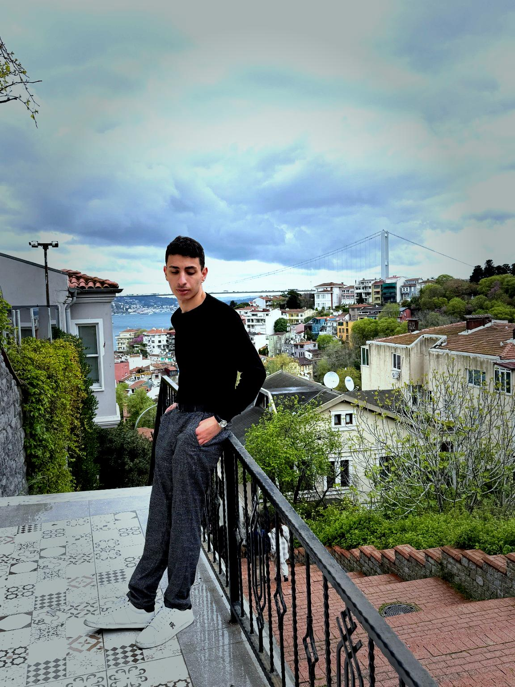

Dilekco
Avukatlar ve hukuk büroları için dilekçe, araştırma ve sözleşme hazırlığını resmî mevzuata dayandıran; dava, müvekkil ve belgeleri tek yerde tutan çalışma alanı.
Next.jsD1Workers
Projeyi incele →
Merhaba, ben
YAZILIM & ÜRÜN GELİŞTİRİCİ
Fikirleri ürüne çeviriyorum. Yazılım, ürün tasarımı ve teknolojiyle gerçek problemleri çözmeye odaklanan kişisel çalışma alanım. Dilekco ve Nerio’yu sıfırdan kurdum; markalar için web deneyimleri tasarlıyorum.

01. PROJELER
Fikirden prototipe, prototipten ürüne. Her proje ayrı bir problem çözme alanı; her biri kendi kullanıcısı için kuruldu.
Avukatlar ve hukuk büroları için dilekçe, araştırma ve sözleşme hazırlığını resmî mevzuata dayandıran; dava, müvekkil ve belgeleri tek yerde tutan çalışma alanı.
Yakınındaki etkinlikleri haritada bul, katıl, insanlarla tanış. Yaşadıkların hikâye ve anı olarak kalsın; şehri rotalarla keşfet.
Kurumsal, kişisel ve özel web sitelerini tasarlıyor, geliştiriyor ve yayına hazırlıyorum. Hazır şablon yerine markaya göre tasarlanmış deneyimler.
02. HAKKIMDA
Yazılım geliştirme, ürün fikirleri ve dijital deneyimler üzerine çalışıyorum. Öğrenirken aynı anda üretmeye, fikirleri gerçek projelere dönüştürmeye ve her projede daha iyi bir şey ortaya koymaya odaklanıyorum.
İyi bir ürün, karmaşık olanı sade hissettirir. Bu yüzden her projede önce problemi netleştiriyor, sonra en az sayıda araçla çalışan bir çözüm kuruyorum.
Kimin hangi işini kolaylaştırdığı belli olmayan özellik eklenmez.
JavaScript, Node.js, Python, MongoDB, Flutter — gerektiğinde, gerektiği kadar.
Tasarım, içerik ve performans birlikte ele alınır; biri diğerini bozmaz.